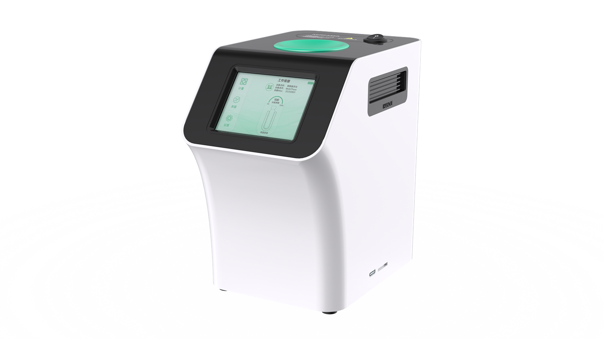

臭氧杀菌
一键启动臭氧杀菌功能，高效杀灭细菌、病毒，30 秒快速完成消毒，为细胞复苏实验的准确性提供全方位保护。

FUNCTIONS
一键启动臭氧杀菌功能，高效杀灭细菌、病毒，30 秒快速完成消毒，为细胞复苏实验的准确性提供全方位保护。
用户可根据实际使用情况调节复苏后冰晶的大小，确保样本复苏的最佳效果，满足不同实验需求。
配备 Type-C 充电口，兼容多种电源设备，充电更方便。便携式扣手设计，轻松携带，满足多场景实验需求，让细胞复苏更灵活。
SD 卡需在仪器关机状态下插入（不支持热插拔），开机后自动启动数据记录，全程无需手动干预，实验数据实时留存；后续数据自动备份，数据存储安全无遗漏，便于后续整理归档，适配实验数据便捷且稳妥的存储需求。
专为实验室高效操作设计，设备尺寸紧凑，一只手即可轻松抓握，节省空间，提升便捷性，让细胞复苏更高效、更灵活。
采用无水化自动解冻技术，用户只需将样本放入仪器对应槽口，避免了水分引起的污染风险，确保细胞复苏过程安全高效。
触摸彩屏可直观呈现工作视窗、计量、杀菌与设置等入口，复苏状态清晰可见，操作更直接。
支持自由设定保护温度（-40°C~0°C），设备不启动时自动维持样本安全温度，从源头规避温度异常对样本的损伤。
实验数据实时留存，后续数据自动备份，便于后续整理归档，适配实验数据便捷且稳妥的存储需求。
支持温度校准，操作流程简洁，校准完成后设备性能稳定，有效降低实验误差，保障实验结果的可靠性与重复性。
实时报警功能，通过数据管控和报警，减少因人为误操作而影响细胞成活率的行为。